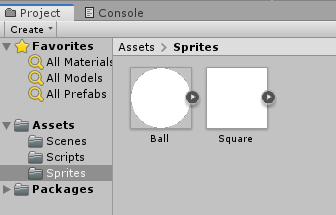
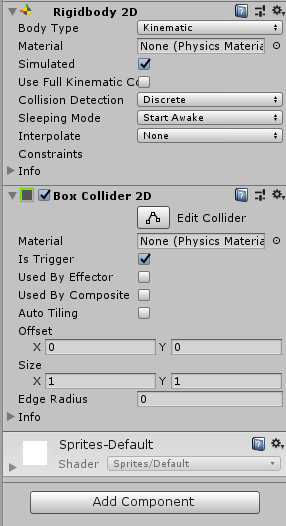
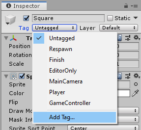
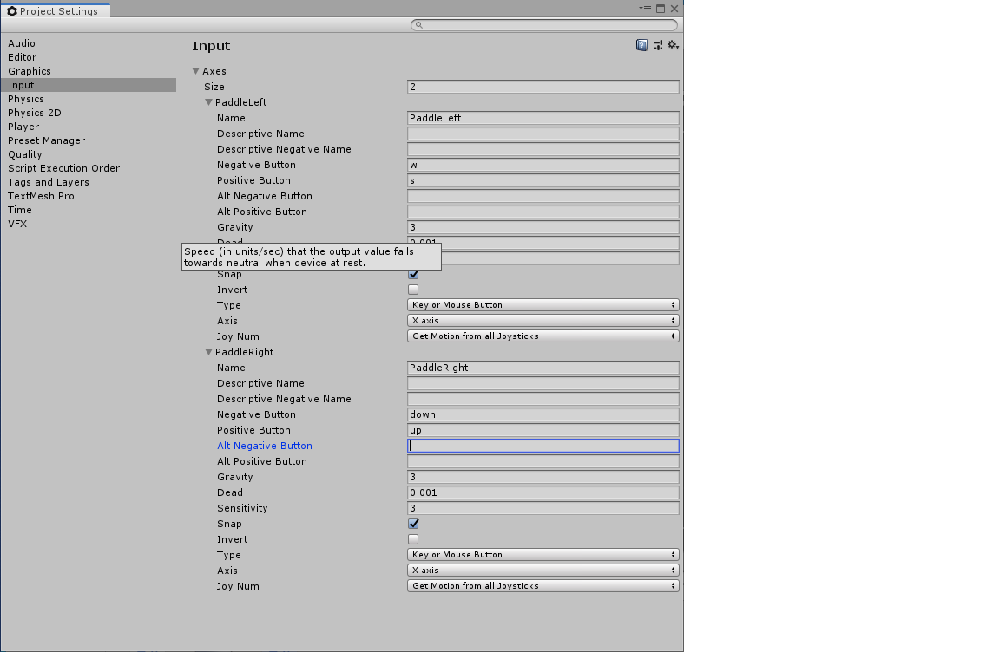

Ping pong
Yleistä
- Aloita uusi projekti, nimeä esimerkiksi PingPong, muista valita 2D-projekti.
- Lisää Assets / Scenes-kansioon uusi Scene, nimeä se nimellä Game. Voit poistaa SampleScene-objektin.
- Lisää Hierarchy-ikkunassa uusi tyhjä GameObject, nimeä ne GameManager.
- Lisää uusi kansio Scripts, lisää tänne C#-skirptit GameManager.cs, Ball.cs ja Paddle.cs (tarkenteita .cs ei tarvitse kirjoittaa). Voit avata nämä tuplaklikkaamalla ja varmistaa, että kaikki aukeavat oikein. Tarkista, että luokkien (class) nimi on GameManager, Ball ja Paddle.
- Lisää uusi kansio Sprites ja lisää tänne ympyrä (Assets / Create / Sprites / Circle) ja neliö (Assets / Create / Sprites / Square).
- Raahaa ympyrä Hierarchy-ikkunaan ja tehdään siitä näin peliin oma objekti. Nimeä ympyrä palloksi (Ball).

Collider
- Lisää Ball-objektille Inspector-ikkunassa uusi komponentti, Circle Collider 2D (Component / Physics 2D / Circle Collider 2D). Valitse törmäyskomponentille Is Trigger -valinta päälle.
- Lisää Ball-objektille myös Rigidbody 2D-komponentti (Component / Physics 2D / Rigidbody 2D). Valitse Body Type-kohdassa Kinematic.
- Tehdään seuraavaksi maila (Paddle): raahaa Square Hierarchy-ikkunaan ja nimeä objekti nimellä Paddle. Raahaa neliö vähän oikealle ja muokkaa sen kokoa jotta se muistuttaisi mailaa.
- Lisää Paddle-objektille Rigidbody 2D, aseta Body Type Kinematic. Lisää myös Box Collider 2D, aseta Is Trigger päälle.

- Lisätään mailalle tagi jotta myöhemmin tiedämme ohjata mailaa koodissa: Inspector-ikkunassa valitse Tag ja Add Tag, anna uudeksi tagiksi "Paddle". Klikkaa uudestaan ja varmista että Tag-kohdassa on nyt Paddle.

- Lisää pallolle Tagiksi "Ball".
Skriptin aloittaminen
- Valitse GameManager Hierarchy-ikkunassa. Raahaa GameManager-skripti uudeksi komponentiksi.
- Lisätään vähän koodia:
public class GameManager : MonoBehaviour { public Ball ball; public Paddle paddle;Tarkista näkyvätkö nyt muuttujat oikein GameManager-objektilla. - Seuraavaksi liitetään Ball.cs -skripti Ball-objektille ja Paddle.cs-skripti Paddle-objektille. Valitse Ball ja raahaa skripti sille. Toista Paddle-objektille.
- Prefab: tee uusi kansio Prefabs. Prefab on uudelleenkäytettävä valmis olio. Tehdään Game Objecteista Ball ja Paddle tällaisia Prefabeja raahaamalla ne tähän kansioon.
- Tämän jälkeen voit poistaa Ball ja Paddle-oliot Hierarchy-ikkunasta (voimme luoda nyt nämä oliot koodissa).
- Raahaa Ball-prefab ja Paddle-prefab GameManagerin vastaaville muuttujille.
- Lisätään pelin aloittaminen GameManager.cs-skriptin Start()-metodiin:
void Start() { Instantiate(ball); Instantiate(paddle); }Testaa ajaa ohjelma. Näkyykö näytöllä nyt pallo ja maila.
Maila
- Paddle.cs -skriptille pitää seuraavaksi lisätä Init()-metodi jossa alustetaan oikean tai vasemman mailan sijainti:
public class Paddle : MonoBehaviour { public void Init(bool isRightPaddle) { Vector2 pos = Vector2.zero; if (isRightPaddle) { // maila oikealle pos = new Vector2 (GameManager.topRight.x, 0); } else { // maila vasemmalle: pos = new Vector2(GameManager.bottomLeft.x, 0); } // muuttaa sijainnin uudeksi: transform.position = pos; } } - Siten GameManager-luokassa luodaan kaksi mailaa ja määritellään pelialueen vasen alareuna ja oikea yläreuna.
public class GameManager : MonoBehaviour { // esitellään julkiset muuttujat public Ball ball; public Paddle paddle; public static Vector2 bottomLeft; public static Vector2 topRight; // Start is called before the first frame update void Start() { bottomLeft = Camera.main.ScreenToWorldPoint(new Vector2(0, 0)); topRight = Camera.main.ScreenToWorldPoint(new Vector2(Screen.width, Screen.height)); // luodaan pallo Instantiate(ball); // luodaan kaksi mailaa Paddle paddle1 = Instantiate(paddle) as Paddle; Paddle paddle2 = Instantiate(paddle) as Paddle; // lisätään mailalle kohta boolean-arvo // joka kertoo onko se oikea vai vasen paddle1.Init(true); paddle2.Init(false); } } - Aja ohjelma ja katso miltä sovellus näyttää. Mailat ovat ihan reunassa, jotta ne saadaan vähän keskemmälle meidän pitää muuttaa sijaintia:
if (isRightPaddle) { // maila oikealle pos = new Vector2 (GameManager.topRight.x, 0); pos -= Vector2.right * transform.localScale.x; }Tee vastaava asia myös else-lauseessa.
-
Seuraavaksi yritetään liikuttaa mailaa ylös ja alas. Tarvitaan muuttujia mailalle:
public class Paddle : MonoBehaviour { private float speed; private float height; private string input; public bool isRight;Start()-metodissa alustetaan korkeus ja nopeus.
void Start() { height = transform.localScale.y; //speed = 5f; }Lopuksi alustetaan isRight Init()-metodissa:
isRight = isRightPaddle;
-
Seuraavaksi määritellään input-syöte. Tämä tapahtuu Edit / Project Settings-valikosta. Valitse kohta Input manager ja valmiiksi määritelty Horizontal . Muuta Size -> 2. Muuta sitten nimi Horizontal -> PaddleLeft. Muuta Vertical -> PaddleRight. Asetetaan lisäksi näille oikeat painikkeet, aseta vasemmalle esimerkiksi 'w' ja 's', ota Alt Negative ja Alt Positive pois käytöstä. Toista oikealle mailalle.

- Meidän pitää kertoa seuraavaksi mailalle kumpi on oikea input-muuttujan arvo. Jos maila on oikea niin asetetaan input = "PaddleRight";, muuten asetetaan input = "PaddleLeft";.
if (isRightPaddle) { input = "PaddleRight"; // maila oikealle pos = new Vector2(GameManager.topRight.x, 0); pos -= Vector2.right * transform.localScale.x; // vasemmalla: pos -= Vector2.left * transform.localScale.x; }Kokeile toimintaa, tarvitaan myös vasen maila eli lisää else-lause jossa asetetaan vasemman mailan nimi.
-
Aseta myös Game Objektin nimeksi input-muuttujan arvo (Paddle.cs, Init()-metodi):
// muuttaa sijainnin uudeksi: transform.position = pos; transform.name = input;Voit ajaa ohjelman ja tarkistaa että Hieararchy-ikkunaan ilmestyy oikealla nimellä kaksi mailaa.
-
Paddle.cs -tiedoston Update()-metodissa muutetaan objektin sijaintia seuraavasti:
void Update() { float move = Input.GetAxis(input) * Time.deltaTime * speed; transform.Translate (move * Vector2.up); } - Muuta mailan speed-attribuutti seuraavasti:
[SerializeField] private float speed;Nyt speed-arvoa voidaan muuttaa editorissa suoraan käsin. Kokeile muuttaa kentän arvoa (esim. 15) editorissa ja testaa toimintaa.
- Mailan liikkeen estäminen ruudun ulkopuolelle. Update() -metodissa ennen mailan liikuttamista tarkistetaan pitääkö liike pysäyttää:
float move = Input.GetAxis(input) * Time.deltaTime * speed; // estetään mailan meneminen ruudun alle // jos liike on alas ja y on tiettyä arvoa pienempi if (transform.position.y < GameManager.bottomLeft.y + height / 2 && move < 0) { move = 0; } else if (transform.position.y > GameManager.topRight.y - height / 2 && move > 0) { move = 0; } transform.Translate(move * Vector2.up);
Pallo
- Pallon liikuttaminen menee suurin piirtein samaan tapaan kuin mailakin:
public class Ball : MonoBehaviour { [SerializeField] private float speed; private float radius; private Vector2 direction;Esittele muuttujat ja anmna speed-muuttujalle arvo editorissa.
- Start()-metodissa alustetaan muuttuajt:
void Start() { // aloitussuunta suoraan direction = Vector2.one.normalized; radius = transform.localScale.x / 2; } -
Update()-metodissa hoidetaan pallon liike. Tulee
void Update() { // liikutetaan palloa transform.Translate (direction * speed * Time.deltaTime); if (transform.position.y < GameManager.bottomLeft.y + radius && direction.y < 0) { direction.y = -direction.y; } if (transform.position.y > GameManager.topRight.y - radius && direction.y > 0) { direction.y = -direction.y; }Lisäksi pitää tarkistaa voittiko jompi kumpi pelaaja:
// tarkistetaan voittiko pelaaja if (transform.position.x < GameManager.bottomLeft.x + radius && direction.x < 0) { Debug.Log("Oikea pelaaja voitti!"); } else if (transform.position.x > GameManager.topRight.x - radius && direction.x > 0) { Debug.Log("Vasen pelaaja voitti!"); } -
Viimeinen asia on mailan osuminen palloon. Kun maila osuu niin vaihdetaan suunta päinvastaiseen. Lisää koodi Ball.cs-tiedostoosi:
void OnTriggerEnter2D(Collider2D other) { if (other.tag == "Paddle") { // tarkistetaan onko maila oikea vai vasen bool isRight = other.GetComponent<Paddle>().isRight; if (isRight == true && direction.x > 0) { direction.x = -direction.x; } if (isRight == false && direction.x < 0) { direction.x = -direction.x; } } }
Lisäyksiä
- Kun peli päättyy niin pysäytä aika pallon Update()-metodissa:
Time.timeScale = 0; // lopetetaan skriptin suoritus enabled = false;
- Kun pallo osuu mailaan niin kasvata speed-ominaisuutta yhdellä.
- Ääniefektien lisääminen. Etsi sopiva ääni pallon osumiseen ja toinen pelin voittamiseen.
- Lisää Assets-kansion alle alikansio Sounds.
- Etsi sopiva ilmainen ääniefekti, raahaa / kopioi se Sounds-kansioosi.
- Lisää pallolle uusi komponentti, Audio Source. Valitse AudioClip-ominaisuudeksi oma äänitiedostosi.
- Lisää koodi dokumentaation mukaan.